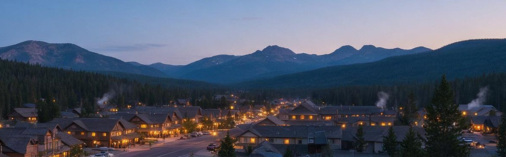
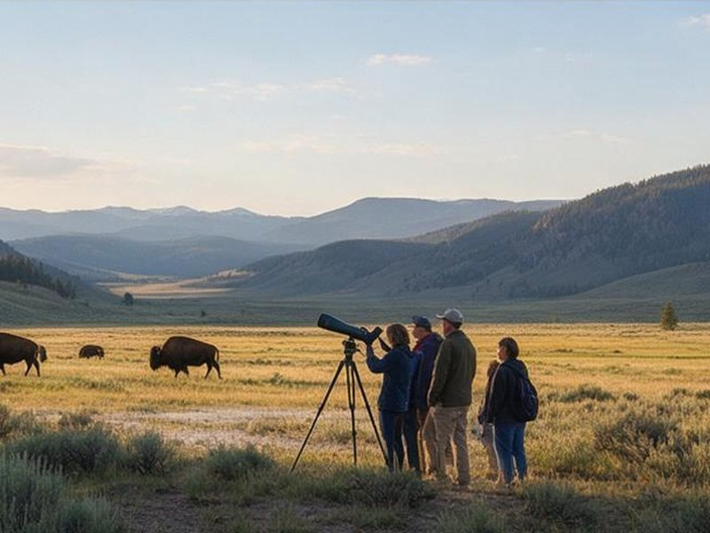

Plan your stay: lodging, getting there, and local tours
Where to sleep, how to arrive, and who can help once you are near the park.

Where to stay
- West Yellowstone, MT: the busiest gateway, closest to Old Faithful and the geyser basins, with the widest range of hotels and restaurants.
- Gardiner, MT: at the north entrance beside Mammoth Hot Springs. The best base for Lamar Valley and for winter visits.
- Cooke City and Silver Gate, MT: small mountain towns at the northeast entrance, near Lamar Valley.
- Cody, WY: about an hour from the east entrance, with museums and a rodeo town feel.
- Jackson and Grand Teton area, WY: a good base if you are combining Yellowstone with Grand Teton National Park.
- Inside the park: lodges and campgrounds are the most convenient but fill up a year or more ahead for summer.
Getting there and around
Several regional airports serve the park, including Bozeman (Montana), Jackson (Wyoming), Cody (Wyoming), and West Yellowstone, which has seasonal service. Bozeman is the largest and is a little over an hour from the north and west entrances. Salt Lake City and Billings are larger hubs a longer drive away.
You will want a car in summer. Park speeds are low and roads are long, so allow extra time between areas. In winter, most visitors use guided snowcoach or snowmobile transport from West Yellowstone or Mammoth, and the only road open to ordinary cars runs from Gardiner to Cooke City.

Tours, gear, and guides
- Wildlife tours: guides who know where to find wolves, bears, and bison, and who bring spotting scopes.
- Geyser basin and canyon tours: a guide handles the timing and the park rules.
- Winter snowcoach and snowmobile trips: the main way to reach the interior from December to March.
- Fishing and float trips: guided fly fishing on rivers in and near the park.
- Gear and rentals: bear spray, binoculars, and winter clothing from shops in the gateway towns.
- Photography workshops: timed for the best light and the most active wildlife.